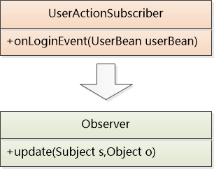
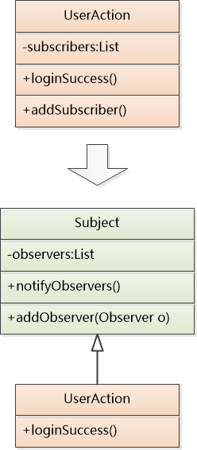

- 本文仅供《码农翻身》公众号发布
- 感谢刘欣老师的指点、修改和排版
1.背景
我是一个Java类，叫做UserAction.java， 生活在一个我们称之为App村的手机端的App中 ，在村里我的本职工作是负责用户登录和用户注销的操作。
我本来是兢兢业业，一心扑在工作上， 但随着业务的不断迭代，我的工作重心不断地发生转移。
一开始，用户登录之后我只需要找到数据库管理员（DbAdmin），把用户数据给他，他就会保存在App的本地数据库里 ，这样用户下次打开App就可以直接登录了！
|
|
后来，聊天比较火，App村里来了个管理聊天的小伙伴（IMBuddy），我得把用户数据给他初始化聊天系统：
|
|
再后来，各个村都在玩电商，村长下令我们村也要搞电商。
负责电商的小伙伴（ShoppingBuddy）让我在用户登录以后把用户数据给他，他需要去获取用户订单、优惠、购物车…：
|
|
NND，村里搞一个活动，加一个服务，我的代码就得跟着改动。
关键是：我到底是不是只管用户登录和注销的Java类了？！
2.订报的思路
我受够了这种生活！
最近老是听DbAdmin说帝国最近新出了一种叫《Java晚报》的报纸，里面记载着Java帝国每天的奇人异事， 我决定去买来看看，说不定能在里面得到些灵感。
“Hi，老哥，帮我来一份《Java晚报》”，我来到报社。
报社老板一听，放下手中0/10的王者荣耀，眯起了眼睛，拿出一份订阅合同：
“我建议您还是订阅吧，最近搞活动， 订阅一年可以送一桶花生油！”
“订阅？怎么订阅？”
“您只需要在合同填写下您联系方式（姓名、手机号码+地址）。每次新报发布，我们就会在第一时间把新报纸根据您留下的地址送过去。”
订阅？ 这个思路不错，对报社来讲，所有的订阅者都是相同的，处理起来都一视同仁，我也可以学习报社的做法：
你们想让我在用户登录之后通知你们，那你们先来我这边订阅吧。
我得用一个列表把订阅的对象存起来，可是订阅的对象千差万别，什么DbAdmin, IMBuddy, ShoppingBuddy ， 怎么才能把他们给统一起来呢？
针对接口编程，而不是针对实现编程！ 前辈们的教诲就在耳边。
把这些订阅的家伙们(DbAdmin, IMBuddy, ShoppingBuddy)抽象成接口：
|
|
无论是谁，如果想使用我的服务，都必须得实现这个接口。
另外， 我自己也得开放一个接口让他们进行订阅：
|
|
看起来一切都这么完美，我找来了DBContext当小白鼠。
DbAdmin老大不情愿地实现了要求的接口, 并且调用我的方法把他自己当成一个订阅者加入到了订阅列表中。
|
|
我们试了N遍，用户一登录，DbAdmin就收到通知了。
最爽的是，以后谁得到用户登录的通知，只需要实现UserActionSubscriber 接口 + 访问我的addSubscriber方法进行订阅就行，我再也不需要因为这些订阅者的数量增减而改变代码了。
村长那老家伙，看到我捣鼓了这种模式，经常和别的村的村长介（chuī）绍（B）。
不过这也导致越来越多的村采用我这种模式。
为了纪念报社带给我的灵感，我把这种一个对多个的模式称之为：“订阅/发布模型”。
3.抽象
有一天，Java帝国派了钦差找到了我：
“听说订阅-发布模型是你创造的？ 我们发现帝国很多场景需要用到这种模式，所以我们决定把你这种模式加进去帝国认证的JDK中。 这次来，希望你能对你的这种模式进行抽象，设计出一个通用的用法。”
帝国要把这种模式加到JDK中，那要换一个不那么low的名字（订阅-发布模型）了。
死了N亿个脑细胞之后，我终于做出了第一版的设计：
一群人去订阅报纸，也可以理解成一群人在观察新的报纸是否发布，订阅的人就是观察者，而报社就是被观察的主题。
所以这里有两个关键点：一个是观察者(Observer)，另外一个是可被观察的主题(Subject)
Observer其实和我之前的UserActionSubscriber是一样的，但是我要把他变得更加通用：

被观察者其实就是就是原来的UserAction， 但是UserAction是一个和业务关联紧密的类，无法通用，我必须得把通用的部分给提取出来，形成一个新的Subject类，在这个类中去处理添加Observer，通知Observer的操作：

为了达到最大程度的抽象， 我觉得可以把这种模式称为“观察者模式”。
我再次找来DbAdmin做小白鼠，让它再配合我实现上面的新接口：
我再次找来DbAdmin做小白鼠，让它再配合我实现上面的新接口：
|
|
DbAdmin说：“除了换个名字，好像变化不大嘛！”
我说： “是啊， 就是怕你们不用，你不知道，我这边变化不小：”
|
|
“哈哈，你这边也变得简单了！” DbAdmin说。
帝国的钦差皱着眉头说：“为什么叫做Subject? 我不喜欢这个名字！ ”
“那你给个提议啊？”
“就叫做Observable吧，表示可被观察的东西。”
虽然我略微不满， 但是为了表示对钦差的尊重，还是依了他吧。
通过这一次抽象，以后想使用观察者模型的观察者和被观察者们只需要实现Observer接口和继承Observable类就可以完成观察者模式了。 不需要再去实现订阅和发布的细节了，可以把更多精力放在自己的本职工作上。
(码农翻身老刘注：由于Observable是个类，这在Java单继承的体系下，其实对使用者例如UserAction提出了要求：不能再继承别的类了！ )
4.附录：Observer源码：
|
|
最后更新： 2017年11月22日 15:32
原始链接： https://xiaoqinyu0000.github.io/2017/11/14/Java/JavaObservable/